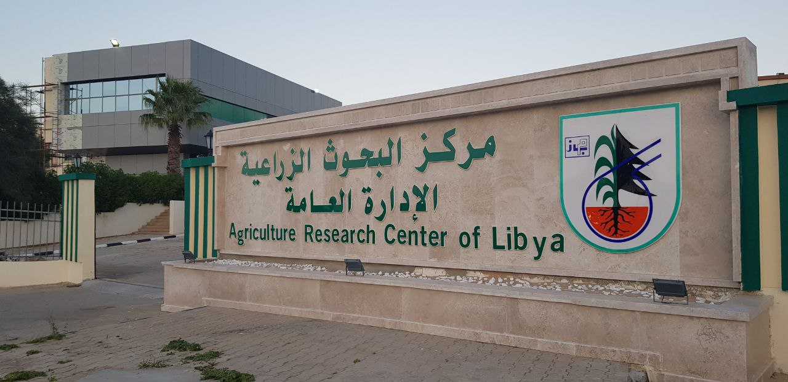

الرئيسية
عن المركز
الأفرع
فرع تونس
فرع مصر
الرؤية و الرساله
الإدارات
إدارة البحوث والدراسات
إدارة الشؤون الفنية
إدارة الشؤون الأدارية والماية
إدارة الأعلام والأرشاد
إدارة نظم المعلومات والتويق
إدارة تنمية الموارد ة
إدارة البحوث الأفتصاديةة
الابحاث
ابحاث الحيوانيه
ابحاث الزراعيه
الاخبار
التقارير
تواصل معنا
